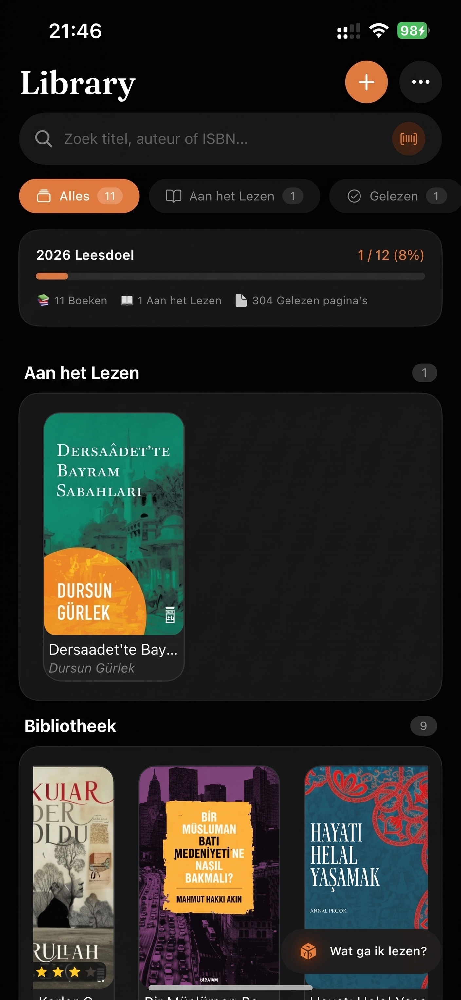
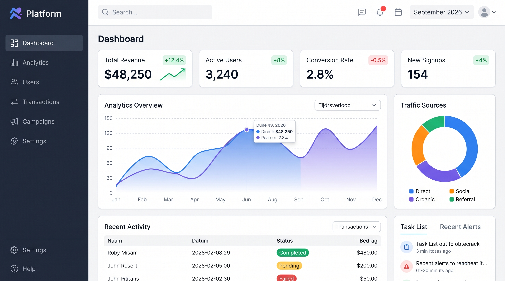
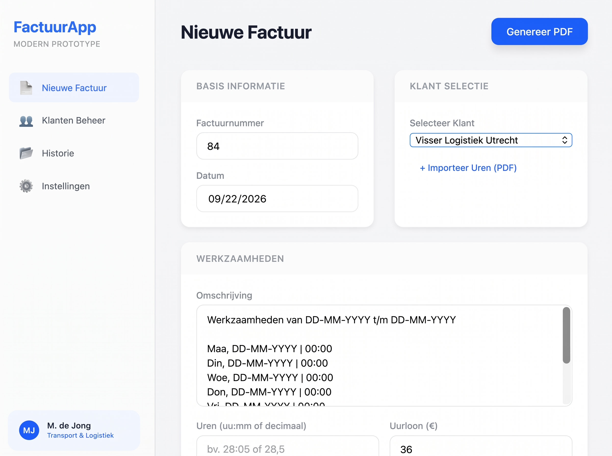

MyLibrary

MyLibrary is een persoonlijke boeken-app waarmee lezers via hun camera ISBN-barcodes scannen om hun boekenverzameling, leesstatussen en persoonlijke recensies moeiteloos te beheren en bij te houden.
Gebruikte technologieën:
- TypeScript & React Native (Expo)
- Supabase (PostgreSQL & OAuth)
- Zustand (met AsyncStorage)
bekijk de code op GitHub →
Interactive Analytics Dashboard

Voor dit project heb ik een interactief web-dashboard ontworpen en gebouwd waarmee kernstatistieken van een platform overzichtelijk worden gevisualiseerd. De focus lag op het helder structureren van complexe data, een intuïtieve gebruikerservaring (UX) en een strakke, moderne lay-out met responsive grafieken en tabellen.
Gebruikte technologieën:
- Semantische HTML5
- CSS3
- Git & GitHub
bekijk de code op GitHub →
Facto

Facto is een desktopapplicatie waarmee je eenvoudig klanten kunt beheren, gewerkte uren en tarieven kunt registreren en automatisch professionele PDF-facturen kunt genereren.
Gebruikte technologieën:
-
TypeScript met React (v19), gebundeld via Vite en gestyled met Tailwind CSS.
- Tauri v2 aangedreven door Rust voor een lichtgewicht, native desktopervaring en integratie met het lokale bestandssysteem.
- jsPDF (inclusief jspdf-autotable) voor het opbouwen en exporteren van PDF-facturen, gecombineerd met Lucide React voor de iconen.
bekijk de code op GitHub →